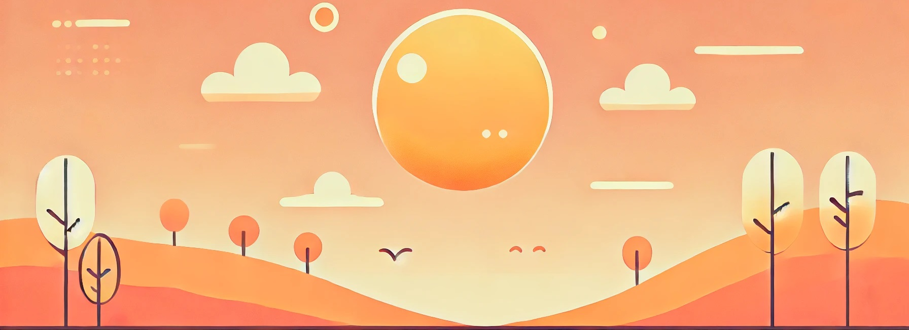

Types of Homeschooling Approaches

1. Traditional Approach
What it is➧ Closely mimics public or private school at home.
Curriculum
➧ Uses textbooks, worksheets, and a set schedule.
Best for
➧ Families new to homeschooling or those who want structure.
Pros
➧ Easy to follow, clear expectations, often aligned with state/national standards.
Cons
➧ Can feel rigid; may not cater to individual learning speeds.
2. Classical Education
What it is➧ Based on the ancient trivium - grammar, logic, and rhetoric.
Curriculum
➧ Focuses on language, critical thinking, memorization, and logic.
Best for
➧ Parents seeking a strong academic and literary foundation.
Pros
➧ Develops strong reasoning and communication skills.
Cons
➧ Can be intense and may feel outdated to some.
3. Charlotte Mason Method
What it is➧ Gentle approach emphasizing nature, literature, and art.
Curriculum
➧ Uses "living books" instead of textbooks; includes nature journaling and short lessons.
Best for
➧ Creative, nature-loving families.
Pros
➧ Cultivates curiosity, character, and love for learning.
Cons
➧ Less emphasis on testing and formal academics.
4. Montessori Method
What it is➧ Child-centered learning with hands-on, self-directed activities.
Curriculum
➧ Uses specialized materials; focuses on independence and life skills.
Best for
➧ Young children and tactile learners.
Pros
➧ Encourages independence, self-discipline, and real-world skills.
Cons
➧ Requires specific materials and can be costly.
5. Unschooling
What it is➧ Child-led learning without a set curriculum or schedule.
Curriculum
➧ Life itself is the curriculum - learning through play, exploration, and interests.
Best for
➧ Free-spirited or alternative families who trust natural learning.
Pros
➧ Highly flexible, respects individual interests and timing.
Cons
➧ Can lack structure; may be hard to measure progress for some parents.
6. Eclectic | Relaxed Homeschooling
What it is➧ A mix of different methods tailored to the family or child.
Curriculum
➧ Picks and chooses from traditional, online, Montessori, etc.
Best for
➧ Families wanting flexibility without committing to one philosophy.
Pros
➧ Adaptable, creative, personalized.
Cons
➧ May lack consistency or long-term structure.
7. Unit Studies
What it is➧ Integrates multiple subjects into a single theme or topic.
Curriculum
➧ One central theme includes reading, science, art, writing, and math activities.
Best for
➧ Multi-age households and kids who love hands-on learning.
Pros
➧ Fun, immersive, ideal for diverse ages.
Cons
➧ Requires planning; not ideal for test prep.
8. Waldorf Education
What it is➧ Focuses on creativity, imagination, and developmental stages.
Curriculum
➧ Emphasizes storytelling, handwork, art, and delayed academics.
Best for
➧ Families who value rhythm, natural materials, and holistic development.
Pros
➧ Nurtures imagination, emotional intelligence, and creativity.
Cons
➧ Less focus on early academics and technology.
9. Virtual Schooling
What it is➧ Education delivered through accredited online platforms.
Curriculum
➧ Structured, grade-based programs with virtual classes and assessments.
Best for
➧ Families who want accredited education with flexibility.
Pros
➧ Convenient, offers teacher support, often aligned with national standards.
Cons
➧ Screen-heavy, less flexibility in pace and content.
10. Road | Worldschooling
What it is➧ Learning through travel, real-life experiences, and cultural immersion.
Curriculum
➧ Life-based learning often supplemented by online or flexible curricula.
Best for
➧ Nomadic, adventurous, or traveling families.
Pros
➧ Culturally rich, real-world learning.
Cons
➧ Less structure, inconsistent internet/access, legal considerations in some countries.
Read ☛ Homeschooling 101
About Blossomings
Blossomings is an educational platform dedicated to providing high-quality
English learning materials, worksheets, and structured lessons for learners worldwide.
Our goal is to make learning English simple, engaging, and accessible for everyone.